政府機關網站改版
青年網站最有力的支援
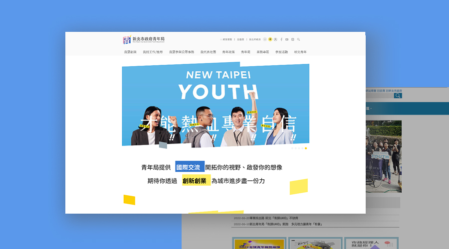
專案背景
新北市青年局官網承載活動資訊、政策資源與青年服務等多元內容，隨著資訊持續累積，網站架構與內容層級逐漸複雜，增加使用者查找資訊的難度。
本次改版專案希望透過網站架構整理與視覺系統優化，提升資訊呈現的清晰度與整體瀏覽體驗。
預期成果（Concept Impact）
- 👓 提升資訊可讀性
- 🔍 降低使用者查找成本
- 🤓 強化網站內容的瀏覽效率
Problem｜問題定義
網站痛點
-
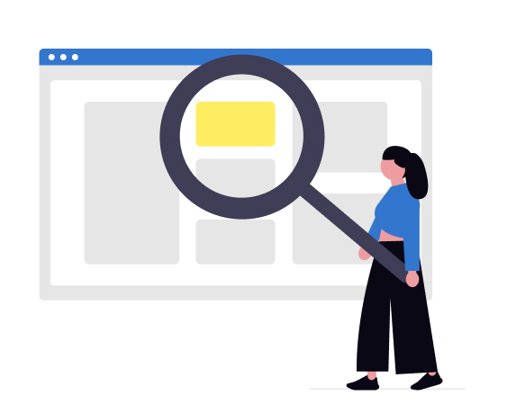
使用者問題
資訊架構分類以內部為主，導致使用者難以快速找到服務入口。
-
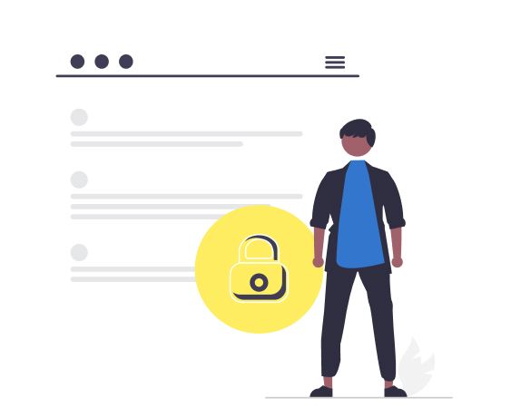
政府限制
內容繁多、部門職責複雜、政策限制。
-
利害關係人
專案時間僅 60 天，須在多方不同觀點，整合需求、優化架構、介面設計。
Key Insights｜關鍵洞察
洞察舊網站存在的核心問題
針對舊網站營運面對的問題，收集資料與實際操作後，將專案核心集中為梳理資訊架構（IA）、增加報名流程、品牌形象朔造。
-
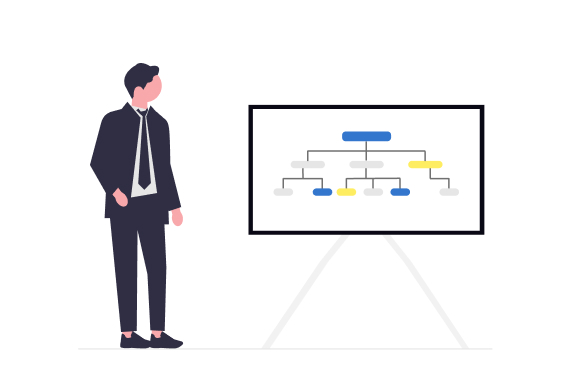
為什麼要先整理 Sitemap 來釐清網站資訊結構？
將原本的部門分類，整理為「四大主題入口」，讓使用者可以需求（如創業、工作/進修、公眾事務、社團）快速進入，而非理解政府組織架構。
-
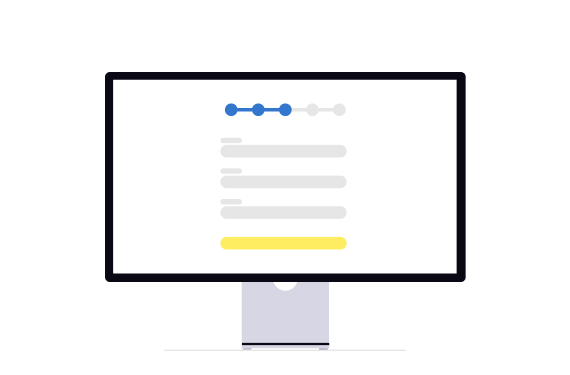
為什麼需優先處理報名流程？
優先優化報名流程，因為這是使用者完成任務的路徑，原本流程是仰賴外部平台報名，增加跳轉並遠離網站，更因為這是首次將報名納入網站服務中，需要關注整體操作的流暢性。
-
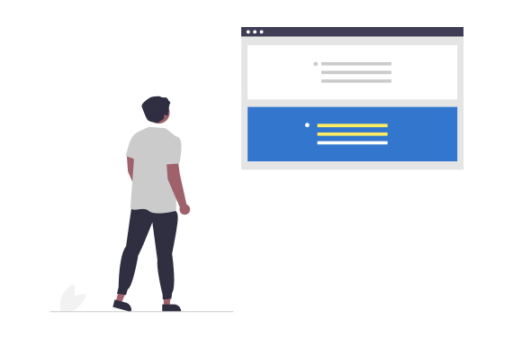
為什麼放棄滿版的視覺配色？
放棄高飽和滿版配色，改用低干擾配色，提供資訊可讀性和長時間瀏覽的舒適度。
Solution Overview｜決策概述
設計上優先確保資訊清晰傳達，而非視覺裝飾
在視覺設計上，評估延續前位設計師的風格與重新建立視覺系統方向，最終選擇後者，以確保整體資訊層級與首頁風格一致。
-
依照使用者需求的網站資訊結構 （部分呈現）
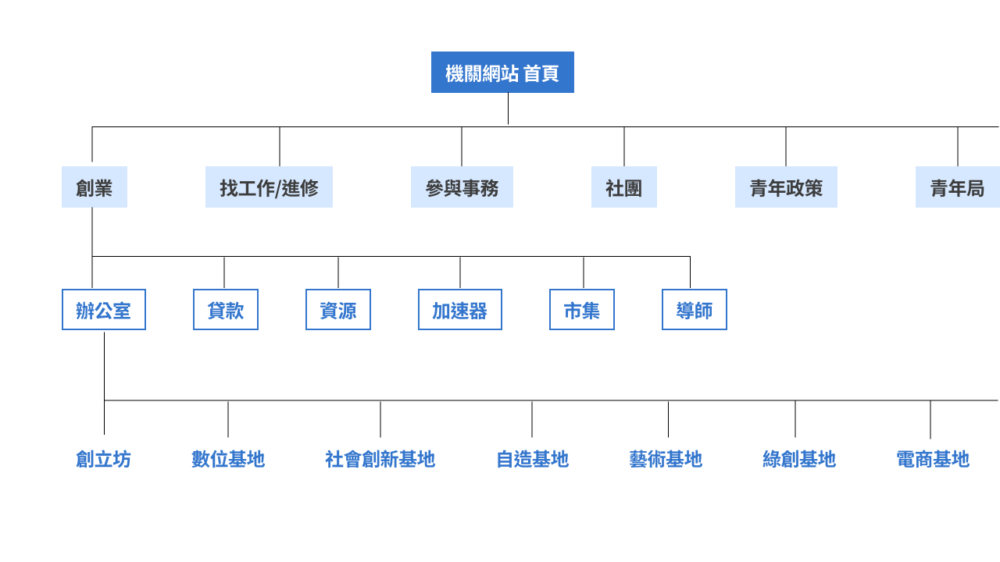
-
結合公司開發報名流程
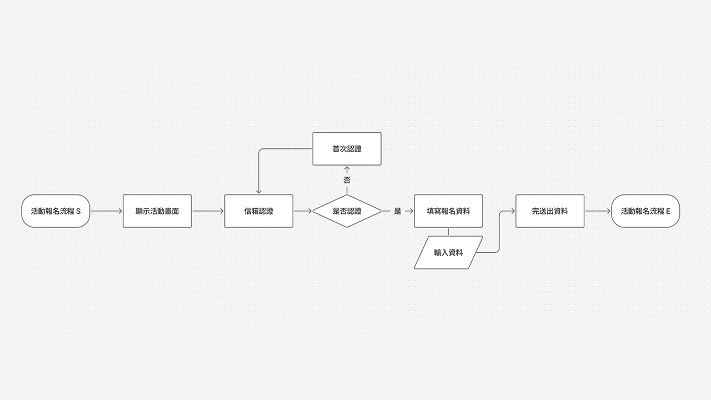
-
提升可讀性與瀏覽舒適度的 UI
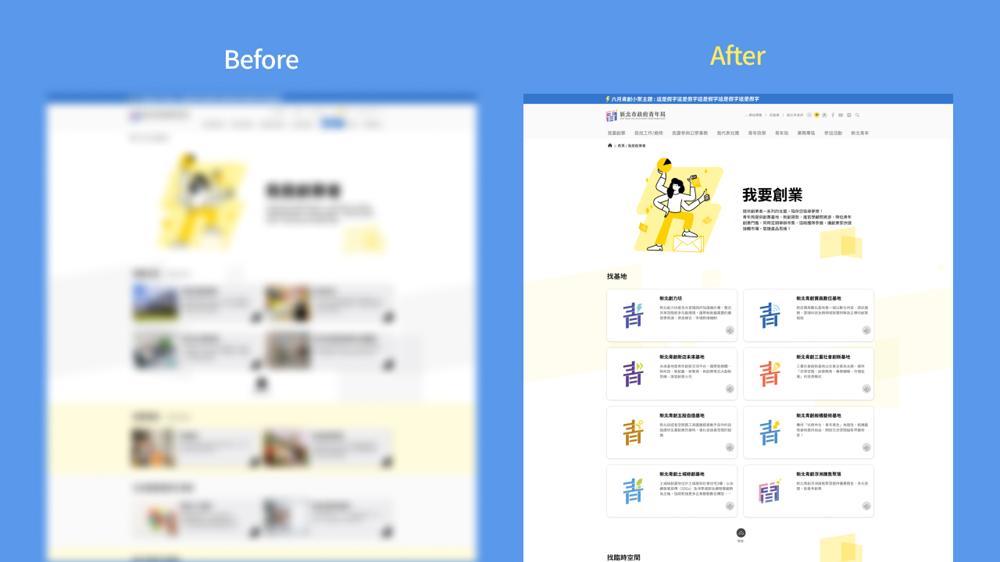
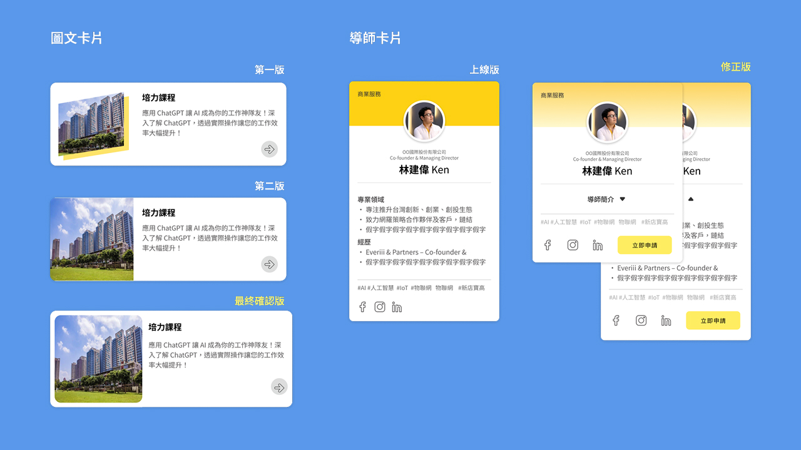
Impact & Learnings｜成果與反思
成果與影響
- 網站上線後，強化網站整體的一制性與政府品牌信任感，提升使用者進入後的停留時間與頁面瀏覽深度，獲得長官與民眾的好評。
- 降低服務諮詢的查找步驟，讓機關負責人於電話這端透過品牌色引導，顏色分類讓民眾輕鬆找到服務資訊。
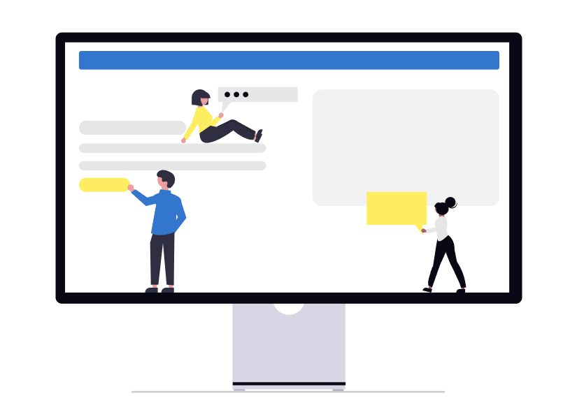
專案的反思
- 青創導師的資料量預估不足，上線後發現超出預期，因此緊急修改成收合方式瀏覽資料，雖然後續我有重新提案優化，交接給專案經理決策。
- 首頁設計未能及時參與，若回到加入專案的那刻，我會花些時間與設計師聯繫，更深入了解設計理由和考量，並加入我的觀點進一步將互動優化。
- 專案時間為期 60 天，因此響應式規劃上僅以電腦介面為主，全靠前端經驗調整，導致後續 Design QA 時花費較多時間調整 RWD；若能回到專案期，我會堅持至少相同頁面做一款平板與手機介面作為基準，可省去後續修正時間。
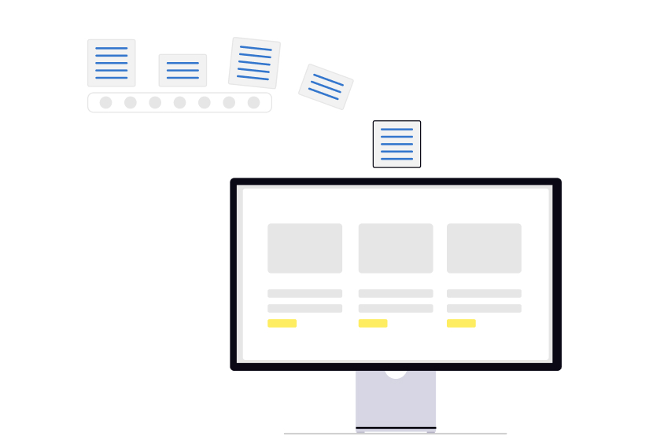